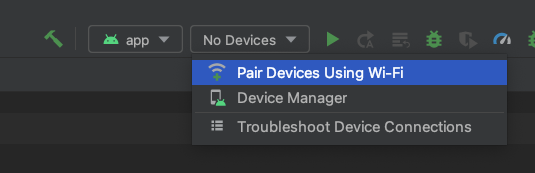
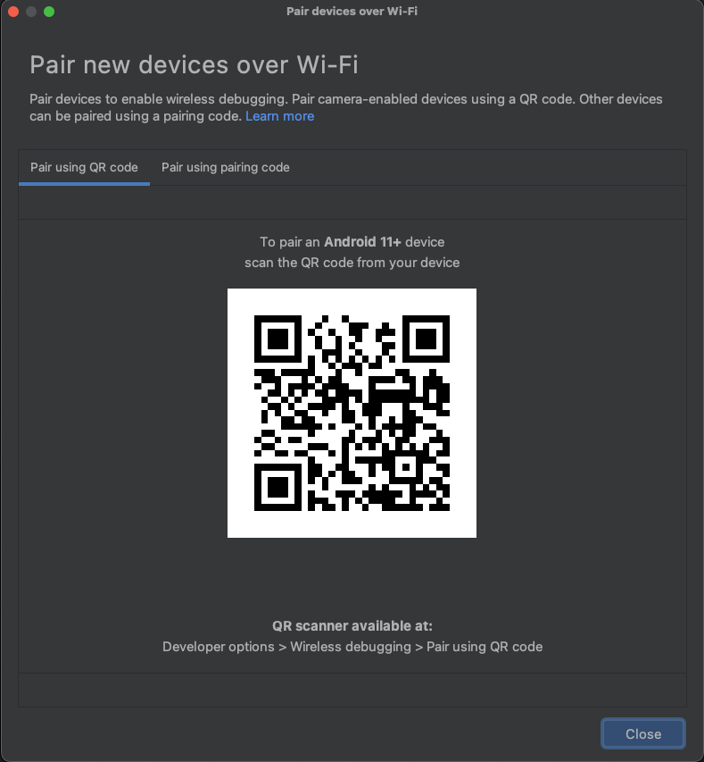

Android Studio 通过二维码使用WIFI连接手机原理分析
Contents
前言
由于开发需要，下了最新版的 Android Studio(Dolphin) ，发现在选择 Android 设备的时候多了一个 Pair Devices Using WI-FI ，然后这里可以使用二维码和配对码，我使用了二维码进行配对，发现挺方便的，可以不用数据线了。
本文会分析一下实现的过程。
原始的无线连接
做 Android 开发的应该都知道，可以通过 adb connect ip:port 来使用无线连接。
不过这种方式需要先通过 USB 连接成功后，然后再使用 adb tcpip port 来指定一个端口，然后才能通过上面的指令进行连接。
这使用起来就非常麻烦，还要有一根数据线，不然还没法操作，有时候没有数据线还真是没办法。
所以当我发现新版的 Android Studio 有二维码连接之后就来了好奇心，这是怎做到的？
二维码连接的原理
由于 Android Studio 开源了它的代码，所以可以进行研究。
我们这就直接开始研究。
从二维码入手
首先在通过二维码连接的时候， Android Studio 会生成一张二维码的图片，我们只要在手机的设置中找到开发者选项，找到无线调试，点进去然后开启无线调试，这时候使用二维码配对设备就会可以使用了，然后扫描 Android Studio 中的二维码，稍等片刻手机就连上了。
WIFI 连接的入口在设备列表中

这里是怎么做到的，我们从二维码入手。
我们知道二维码里面其实存的就是一些字符，我们可以使用微信扫描一下，微信无法识别二维码的意义会把二维码的内容显示出来，我们就需要看看二维码里面到底存了什么。
我把二维码放到下方，感兴趣可以扫一下

扫出来的结果如下
WIFI:T:ADB;S:studio-R*RsW2zVC@;P:y8G^#OcZg*z0;;
虽然看不懂这些字符表达的是什么意思，但是还是能发现一些规律的。为了找出规律，我把二维码的页面关掉，重新生成一个二维码，扫描得出的结果如下
WIFI:T:ADB;S:studio-0d6^I(ncs1;P:*pj3cLQLzt<V;;
这下有一些不同了，我们大概能猜到哪些不同，哪些一样了，放到一起对比一下
WIFI:T:ADB;S:studio-R*RsW2zVC@;P:y8G^#OcZg*z0;;
WIFI:T:ADB;S:studio-0d6^I(ncs1;P:*pj3cLQLzt<V;;
可以发现不变的是 WIFI:T:ADB;S:studio- 看来是有固定的前缀，到这里就不太好猜接下来的字符表达的是什么意思，不过像这种没有意义的字符，很可能是随机生成的字符串，没多大的意义，主要是不能重复且随机。
从代码入手
经过二维码的分析，我们知道了二维码里面的字符是有一个固定的前缀，但是我们并不知道后面的规律是什么，所以我们还是需要从源码中看下能不能找出规律，代码主要在 WiFiPairingServiceImpl.kt - Android Code Search
我们直接看生成二维码的代码
@UiThread
class WiFiPairingServiceImpl(
private val randomProvider: RandomProvider,
private val adbService: AdbServiceWrapper,
taskExecutor: Executor
) : WiFiPairingService {
private val studioServiceNamePrefix = "studio-"
override fun generateQrCode(backgroundColor: Color, foregroundColor: Color): ListenableFuture<QrCodeImage> {
return taskExecutor.executeAsync {
val serviceName = studioServiceNamePrefix + createRandomString(10)
val password = createRandomString(12)
val pairingString = createPairingString(serviceName, password)
val image = QrCodeGenerator.encodeQrCodeToImage(pairingString, backgroundColor, foregroundColor)
QrCodeImage(serviceName, password, pairingString, image)
}
}
/**
* Format is "WIFI:T:ADB;S:service;P:password;;" (without the quotes)
*/
private fun createPairingString(service: String, password: String): String {
return "WIFI:T:ADB;S:$service;P:$password;;"
}
private fun createRandomString(charCount: Int): String {
@Suppress("SpellCheckingInspection")
val charSet = "abcdefghijklmnopqrstuvwxyzABCDEFGHIJKLMNOPQRSTUVWXYZ0123456789!@#$%^&*()-+*/<>{}"
val sb = StringBuilder()
for (i in 1..charCount) {
val char = charSet[randomProvider.nextInt(charSet.length)]
sb.append(char)
}
return sb.toString()
}
}
代码不多，生成二维码的函数是 generateQrCode 这里使用 studioServiceNamePrefix 和一串10位数的随机字符串组成 serviceName ，然后随机生成12位的字符串用作 password 。
最后面调用 createPairingString 生成二维码的内容。
到这里我们就可以知道 WIFI:T:ADB;S:${service};P:${password};; 这里除了 service 和 password 之外其它都是固定的。
而 service 又是以 studio- 开头的，所以其实二维码里的内容除了固定的之外， service 和 password 是可以随便设置的。
来看下 WIFI:T:ADB;S:${service};P:${password};; 这里一些字符的含义
- 首先这里使用
:和;进行分隔，可以分成三部分WIFI:T:ADB;、S:${service};、P:${password};; - 第一部分是固定的
WIFI:T:ADB表示的意思就是通过ADB来连接WIFI里的手机 - 第二部分表示的是服务的名字，
S可能就是SSID的缩写，然后通过:和service进行分割 - 第三部分表示的是服务的密码，有密码是为了安全，同一个局域网里可能有多个设备，有密码可以避免连接到别人的电脑上，
P应该就是password的意思，后面接的就是密码，最后有两个;;第一个好理解，第二个很可能就是用来表示结束的意思。
还做了啥？
从上面的分析，我们知道了二维码生成的规则，但是怎么手机扫一下码就连上了呢？
所以我们猜测 Android Studio 在生成二维码的同时应该还做了其它事情，于是我们查看一下 generateQrCode 是在哪里调用的，看看这行代码附近有没有什么线索。
通过搜索发现调用的地方在 QrCodeScanningController.kt - Android Code Search ，我提取了关键部分如下
@UiThread
class QrCodeScanningController(
private val service: WiFiPairingService,
private val view: WiFiPairingView,
parentDisposable: Disposable
) : Disposable {
suspend fun startPairingProcess() {
view.showQrCodePairingStarted()
generateQrCode(view.model)
state = State.Polling
pollMdnsServices()
}
private suspend fun generateQrCode(model: WiFiPairingModel) {
// 这里的 service 是一个接口，它的实现类就是上一小结提到的WiFiPairingServiceImpl
val qrCode = service.generateQrCode(UIColors.QR_CODE_BACKGROUND, UIColors.QR_CODE_FOREGROUND)
model.qrCodeImage = qrCode
}
}
从 startPairingProcess 中可以发现，除了调用 generateQrCode 生成二维码之外，还调用了 pollMdnsServices 。
service 的实现类是 WiFiPairingServiceImpl 。
private fun pollMdnsServices() {
scope.launch {
// Don't start a new polling request if we are not in "polling" mode
while (state == State.Polling) {
try {
val services = service.scanMdnsServices()
withContext(uiThread(ModalityState.any())) {
view.model.pairingCodeServices = services.filter { it.serviceType == ServiceType.PairingCode }
view.model.qrCodeServices = services.filter { it.serviceType == ServiceType.QrCode }
}
} catch (e: Throwable) {
// TODO: Should we show an error to the user?
LOG.warn("Error scanning mDNS services", e)
}
// Run again in 1 second, unless we are disposed
delay(Duration.ofSeconds(1))
}
}
}
在 pollMdnsServices 中有一个延迟1s的循环，只要状态是 Polling 就会一直调用 service.scanMdnsServices ，所以关键还是在 WiFiPairingServiceImpl.scanMdnsServices 上
@Throws(AdbCommandException::class)
override suspend fun scanMdnsServices(): List<MdnsService> {
val result = adbService.executeCommand(listOf("mdns", "services"))
// Output example:
// List of discovered mdns services
// adb-939AX05XBZ-vWgJpq _adb-tls-connect._tcp. 192.168.1.86:39149
// adb-939AX05XBZ-vWgJpq _adb-tls-pairing._tcp. 192.168.1.86:37313
// Regular expression
// adb-<everything-until-space><spaces>__adb-tls-pairing._tcp.<spaces><everything-until-colon>:<port>
val lineRegex = Regex("([^\\t]+)\\t*_adb-tls-pairing._tcp.\\t*([^:]+):([0-9]+)")
return result.stdout
.drop(1)
.mapNotNull { line ->
val matchResult = lineRegex.find(line)
matchResult?.let {
try {
val serviceName = it.groupValues[1]
val ipAddress = withContext(Dispatchers.IO) { InetAddress.getByName(it.groupValues[2]) }
val port = it.groupValues[3].toInt()
val serviceType = if (serviceName.startsWith(studioServiceNamePrefix)) ServiceType.QrCode else ServiceType.PairingCode
MdnsService(serviceName, serviceType, ipAddress, port)
} catch (ignored: Exception) {
LOG.warn("mDNS service entry ignored due do invalid characters: $line")
null
}
}
}
}
分析上面的代码可以知道这里会调用 adb mdns services 获得输出的结果，然后通过正则表达式去匹配 _adb-tls-pairing._tcp.xxx 的服务，如果能找到就获取它的服务名字、IP、端口号还有服务的类型，然后返回给上一层函数调用。
这里的服务类型有两种一种是 WIFI 配对，另一中是配对码配对。这里判断是否是 WIFI 配对也很简单，就是判断是不是以 studio- 开头的，是就是 WIFI 配对，不是就是用配对码配对。
这里的 adbService 是对 adb 这个命令做了封装，所以 executeCommand 就是执行 adb 的命令，带上参数。这里我就不带大家看了，感兴趣的可以自己查看。
分析了这么多发现关键在 adb mdns services 上，我们尝试在命令行里执行这条指令，看看会输出什么
List of discovered mdns services
啥也没有，这时候你打开手机，在设置里找到 开发者选项 ，然后找到 无线调试 ，点击使用二维码配对设备，然后再次执行这条指令，得到结果如下。注意这里要快点执行，不然连接完成是看不到的
adb-ba46f2ef-1ZThbU _adb-tls-connect._tcp. 192.168.1.15:41583
studio-R*RsW2zVC@ _adb-tls-pairing._tcp. 192.168.1.15:39757
有输出了，可以看到第二行 studio-R*RsW2zVC@ _adb-tls-pairing._tcp. 192.168.1.15:39757 就是我们要的。
你会发现第一列不就是我们使用字符串随机生成的吗，这时候就派上用场了。至于第一行的有其它用处，这里暂时先不说。
通过这些分析，我们可以知道，手机使用二维码扫描之后会生成一个 _adb-tls-pairing._tcp. 的服务，然后他的名字就是在 Android Studio 里随机生成的，这里还包含了它的 IP 和端口号。
有了 IP 和端口号接来下就需要连接了，我们来看看怎么连接的。
怎么连接的？
在上一步我们知道了手机对于的 IP 和端口号，所以接下来就需要在电脑上进行连接了，我们并没有手动去连接，所以这里也是 Android Studio 做的。
我们接着从 pollMdnsServices 看起，我把一些代码精简了
private fun pollMdnsServices() {
val services = service.scanMdnsServices()
view.model.pairingCodeServices = services.filter { it.serviceType == ServiceType.PairingCode }
view.model.qrCodeServices = services.filter { it.serviceType == ServiceType.QrCode }
}
从上面的代码可以发现，调用 adb mdns services 之后会把 pairingCodeServices 和 qrCodeServices 给保存到 model 里。我们到 model 里一探究竟。
/**
* Model used for pairing devices
*/
@UiThread
open class WiFiPairingModel {
/** The list of listeners */
private val listeners: ArrayList<AdbDevicePairingModelListener> = ArrayList()
open var qrCodeServices: List<MdnsService> = emptyList()
set(value) {
field = value
listeners.forEach { it.qrCodeServicesDiscovered(value) }
}
open var pairingCodeServices: List<MdnsService> = emptyList()
set(value) {
field = value
listeners.forEach { it.pairingCodeServicesDiscovered(value) }
}
}
可以发现这里会分别调用 MdnsService 中的 pairingCodeServicesDiscovered 和 qrCodeServicesDiscovered 所以这里的关键是找到 AdbDevicePairingModelListener 。
@UiThread
class QrCodeScanningController(
private val service: WiFiPairingService,
private val view: WiFiPairingView,
parentDisposable: Disposable
) : Disposable {
private val modelListener = MyModelListener()
init {
// ...
view.model.addListener(modelListener)
}
@UiThread
inner class MyModelListener : AdbDevicePairingModelListener {
override fun qrCodeServicesDiscovered(services: List<MdnsService>) {
LOG.info("${services.size} QR code connect services discovered")
services.forEachIndexed { index, it ->
LOG.info(" QR code connect service #${index + 1}: name=${it.serviceName} - ip=${it.ipAddress} - port=${it.port}")
}
// If there is a QR Code displayed, look for a mDNS service with the same service name
view.model.qrCodeImage?.let { qrCodeImage ->
services.firstOrNull { it.serviceName == qrCodeImage.serviceName }
?.let {
// We found the service we created, meaning the phone is in "pairing" mode
startPairingDevice(it, qrCodeImage.password)
}
}
}
override fun pairingCodeServicesDiscovered(services: List<MdnsService>) {
LOG.info("${services.size} pairing code pairing services discovered")
services.forEachIndexed { index, it ->
LOG.info(" Pairing code pairing service #${index + 1}: name=${it.serviceName} - ip=${it.ipAddress} - port=${it.port}")
}
}
}
}
view.model 的 listener 是在构造函数里赋值的，它的类型是 MyModelListener 。
这个对象的 pairingCodeServicesDiscovered 没做什么事情，我们重点看 qrCodeServicesDiscovered 。
在 qrCodeServicesDiscovered 中最重要的就是调用了 startPairingDevice 然后把之前生成的密码传进去了。
private fun startPairingDevice(mdnsService: MdnsService, password: String) {
// ...
state = State.Pairing
val pairingResult = service.pairMdnsService(mdnsService, password)
view.showQrCodePairingWaitForDevice(pairingResult)
val device = service.waitForDevice(pairingResult)
state = State.PairingSuccess
view.showQrCodePairingSuccess(mdnsService, device)
}
省略部分代码，发现最关键的在 service.pairMdnsService 中，接着就是调用 service.waitForDevice ，我把代码精简后如下所示
override suspend fun pairMdnsService(mdnsService: MdnsService, password: String): PairingResult {
// ...
val deviceAddress = "${mdnsService.ipAddress.hostAddress}:${mdnsService.port}"
val passwordInput = password + LineSeparator.getSystemLineSeparator().separatorString
val result = adbService.executeCommand(listOf("pair", deviceAddress), passwordInput)
val lineRegex = Regex("Successfully paired to ([^:]*):([0-9]*) \\[guid=([^\\]]*)\\]")
val matchResult = lineRegex.find(result.stdout[0])
return matchResult?.let {
val ipAddress = withContext(Dispatchers.IO) { InetAddress.getByName(it.groupValues[1]) }
val port = it.groupValues[2].toInt()
val serviceGuid = it.groupValues[3]
PairingResult(ipAddress, port, serviceGuid)
}
override suspend fun waitForDevice(pairingResult: PairingResult): AdbOnlineDevice {
return adbService.waitForOnlineDevice(pairingResult)
}
可以看到这里最关键的还是调用 adb 去执行命令，也就是调用 adb pair ip:port password 。其中 IP 和端口号就是我们之前获取到的，密码就是我们自己生成的随机字符串。
接下来就是获取执行这条命令的结果，接着就是调用 waitForDevice 等待设备的连接。
总结
分析完了，我们来总结一下
- 生成两个随机字符串用于名字和密码，并根据一定的规则生成二维码，等待用户扫描
- 通过不断地调用
adb mdns services查看是否有_adb_tls-pairing._tcp.的服务，并判断名字是否就是我们上一步生成的。 - 找到对应的服务后获取到对应的
IP和端口，通过adb pair ip:port password进行配对 - 等待设备连接成功
知道了 WIFI 连接的原理，我们自己也可以实现一个类似的功能，这样就不用每次都打开 Android Studio 才能使用 WIFI 连接了。
在下一篇文章我会采用 Rust 实现类似的功能。